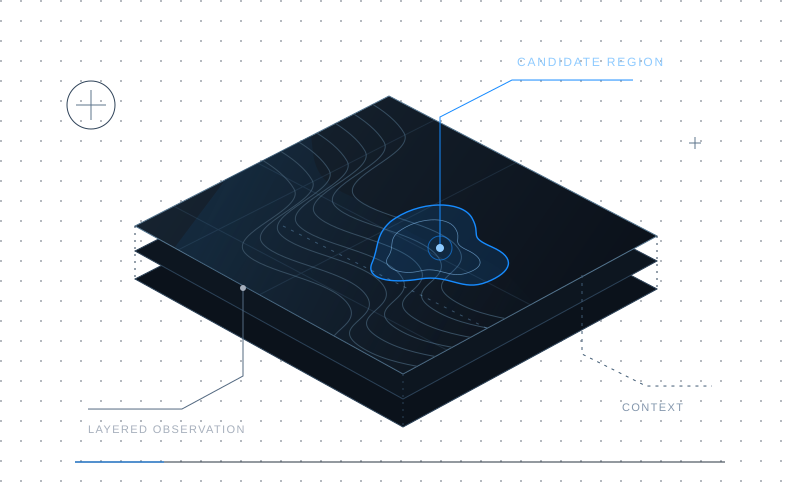

Satellite research
Exploring satellite imagery to flag possible oil spills for closer review.
Read case study for Satellite research
- The problem
- A suspicious region in a satellite image needs a closer look before anyone can draw a conclusion.
- My work
- Comparing segmentation models in PyTorch, testing checkpoint recovery and running inference experiments.
- Approach
- Observe → Screen → Context → Investigate
- Project notes
- A private research prototype, illustrated here with synthetic imagery.
- In context
- Screened regions are candidates for investigation, not confirmed oil spills. Imagery alone cannot establish which vessel was responsible.
The approach
- ObserveStart with satellite imagery.
- ScreenHighlight candidate regions with image analysis.
- ContextConsider each region alongside supporting information.
- InvestigateLeave the final interpretation to a human reviewer.